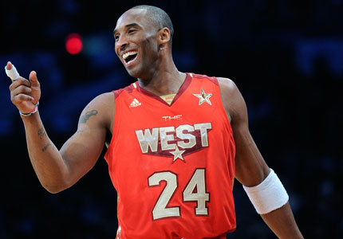

One of the greatest Basketball players to date and a legend within the Los Angeles Lakers team history.
Kobe Bryant is regarded as one of the most famous retired basketball players in the history of the NBA. After playing his entire 20 year career with the LA Lakers, and helping them acheive 5 playoff wins, Kobe has retired from Basketball leaving his Legacy behind him.
Other Achievements
Draft/Lakers Trade
In 1996, Kobe Bryant was drafted 13th to the Charlotte Hornets in the first round. Shortly after he was sent to the Los Angeles Lakers on a trade where he stayed for the next 20 years of his Basketball career. Here we see Kobe hoisting the Gold and Purple jersey for the very fist time following his sucessful trade to the Lakers.
2007/08 All-NBA MVP
Although in 2007 the Lakers lost in the NBA finals, Kobe was still announced the All-NBA MVP award. This meant that of the 30 teams enter in the NBA, Kobe was the Most Valuable Player. This is Kobe's only NBA MVP award.
Meeting Former-President Barack Obama
In 2010, following Kobe's NBA Finals victory where he was announced Finals MVP for the second year running, The Lakers' whole squad was invited to meet the now Former-President of the United States, Barack Obama. Following Obamas speech to congratulate them, Kobe and his team shook hands with the President and shared a photo.
All-Star History

Kobe Bryant played the All-Star game a record 18 times. The All-Star game was a game where teams joined together to form a Western and Eastern Conefrence team where they faced off. Kobe Bryant was made the Overall All-Star MVP four times.
Olympic Accomplishments
Kobe Bryant played with a National American team, 2 of these times however were played for Team USA in the Olympics. With team USA he won two Olympic Gold Medals. His first Olympic Gold was won in 2008 in the Beijing Olympics and the second Gold medal was won in 2012 in the London Olmpics.